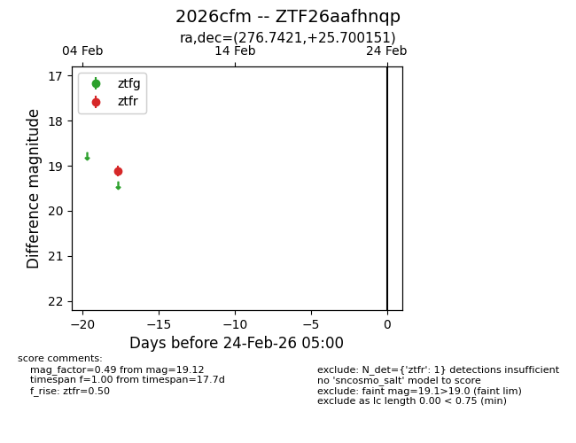
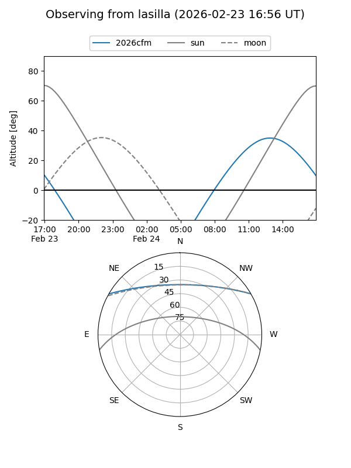
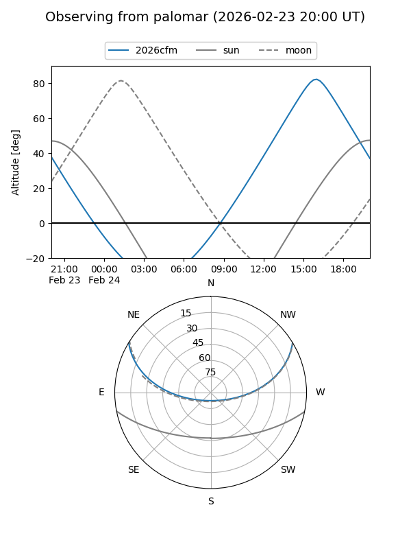

2026cfm
Target 2026cfm at 2026-02-24 09:08
Aliases and brokers:
FINK: link
Lasair: link
ALeRCE: link
TNS: link
YSE: link
alt names
ZTF26aafhnqp (ztf,fink_ztf)
2026cfm (tns,yse)
Coordinates:
equatorial (ra, dec) = 276.7421,+25.70015
equatorial (HMS+DMS) = 18:26:58.11,+25:42:00.54
galactic (l, b) = (53.8342,+16.45141)
Flags:
Photometry:
last ztfr=19.12
1 ztfr detections
Lightcurve

Visibility


Additional plots